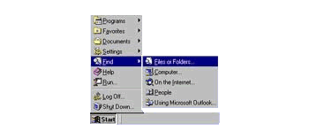
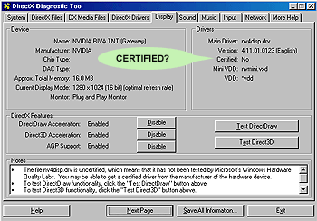
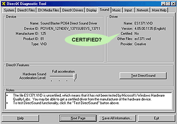

|
Troubleshooting
- If you have problems after installing the game, first
check to make sure that you meet the system
requirements, then check to make sure that all of
your drivers are certified with DirectX
7.0.
- If DirectX didn't get installed correctly, you can
try manually installing
DirectX, of if you have trouble restarting Windows
because of DirectX, click
here.
- If DirectX is working fine, check your Windows
color mode and make sure that "Active
Desktop" isn't running.
- Also make sure that all other programs
are shut down before running the game, and that
you have plenty of virtual
memory.
- Also make sure that there are no specific issues with
your Video or Sound card in the Known
Issues section.
DirectX 7.0
In order for the game to run, your computer must have
DirectX 7.0 (included on the CD) or higher installed.
If you are unsure about whether your machine meets this
requirement then it is recommended that you install
them.
Manual Installation
To manually install DirectX 7.0 go to Microsoft.com/Direct
and download the latest version of DirectX that is available
and install it.
Effects of installing DirectX
Installing DirectX may result in any manufacturers
video card utilities being disabled (eg. Matrox Powerdesk,
Diamond InControl etc.). These utilities will no longer
be accessible, and any options to change video settings
etc. will revert back to the control of Windows (to
access the display properties, right click the mouse
over the Windows desktop and select 'Properties', from
the Window that then opens select the 'Settings' tab
to enter the 'Display Properties' screen).
'Insert Disk' request during installation
of DirectX 7.0
If you receive a message asking you to insert your
Windows CD-ROM during the installation of DirectX, it
means that some aspect of Windows needed by DirectX
is not installed (typically it will be sound card related
utilities such as volume control). If you receive this
message, insert your Windows CD and install the required
files. Once done, you will need to install DirectX again
in order to ensure a full installation.
Problems
restarting machine after installation of
DirectX
If after installing DirectX, you restart your machine
and encounter problems (eg. a black screen is displayed
rather than the Windows desktop) you may need to restore
your old video card drivers. In order to see the Windows
desktop to do this, start your machine in 'Safe Mode'.
This can be done as follows...
Start your machine, and when the BIOS screen appears
(a screen listing CPU type etc. in a table) press
the F8 key. Your should now be met with the Windows
Startup Menu.
Select the Safe Mode option from this menu using
the cursor keys and then press <ENTER>.
Windows will start and you will be met with a message
telling you that Windows is running in 'Safe Mode'.
Press <ENTER> to continue loading Windows.
Once Windows finished loading, press the right
mouse button and select 'Properties' from the menu
that appears.
From the 'Display Properties' menu, choose the
'Settings' tab and then click on 'Advanced' (if
you are using the original version of Windows 95,
this will be named 'Change Display type').
From the new window that opens click on the 'Adapter'
tab, then click on the 'Change…' icon (if using
the original version of Windows 95, click on the
'Change' icon next to 'Adapter Type').
The installation process for adding video drivers
will now begin, use the drivers originally supplied
for your video card, and follow the manufacturers
instructions.
Run through these
instructions to make sure your DirectX is working properly.
- Click , "Find", "Files and Folders"...

- In the "Named" box type "dxdiag.exe". Make
sure that the "Look in" window says "My Computer"
and click on button. When Dxdiag.exe
comes up Double click on the
Icon.
- Click on the "Display" or "Display 1" tab and
look to see if it says Certified Yes or No. If
it says no, then write down the Adapter Name,
this is your Video card. If you have a 3Dfx card
click on "Display 2" and check that card too.

- Next click on the "Sound" tab, check to see
if this one says "Certified: Yes". If it says
no then write down the "Device Description", this
is your Sound card.

- If one or more of your cards were not certified
contact the manufacture by phone or go to there
website and get the latest drivers for your cards
and Install them. Once you get your new drivers
installed check to see if they say "Certified:
Yes", once they do the game will work properly.
Back
to Troubleshooting
Color Mode
When running the game, you will need to have windows
set to a color mode of 16-bit color or higher. The color
mode can be changed as follows
- Click the right mouse button when on the desktop,
and select the option 'Properties' from the menu that
appears.
- A window titled 'Display Properties' will appear,
click on the 'Settings' tab to bring up the display
settings screen.
- From this screen the color mode ('Colors') and screen
resolution ('Screen area') can be altered.
Active Desktop
If you have Microsoft's Active Desktop enabled, it
is recommended that you disable it before running the
game.
Close all programs
If you have gone through the Troubleshooting
steps and your game is still not working properly, this
may be the cause of a software conflict. Your system
may have one or more utilities running (Virus scanners,
Phone answering software, CD ROM utilities, game controller
button mappers.) To rule out the possibility of a software
conflict, Press the <CTRL>, <ALT>, and <DEL>
keys at the same time and "End Task" all applications
(Keep Explorer and Systray running) and try running
your game again.
Windows Virtual
Memory
Virtual Memory is basically when Windows uses hard
drive space as extra memory. It does this by creating
a swap file on the hard drive and writing data to it,
the result is that software that may need more memory
than the machine it is being run on physically has will
still run. Games software typically needs a fairly large
amount of space for a swap file, with around 100MB typically
recommended. The Virtual memory can be managed in two
ways, automatically or manually. To check which method
is being used on your machine, follow these steps...
- Right click on 'My Computer' and select 'Properties'
from the menu that appears.
- The 'System Properties' window will open, click
on the 'Performance' tab and then click on the 'Virtual
Memory' icon. 3.A window titled 'Virtual Memory' will
now be open. If the option "Let Windows manage my
virtual memory settings" is highlighted then your
virtual memory is being automatically managed by windows.
If this is the case please ensure that your
- drive has enough free hard drive space (100MB or
more). This can be checked by double clicking on the
'My Computer' icon, right clicking on the (C:) drive
and selecting 'Properties', the free space on the
drive will be listed in the properties window that
opens. - If the option "Let me specify my own virtual
memory settings" is highlighted, you are manually
setting the limits of the swap file for Virtual memory.
If this is the case we recommend that you ensure that
the maximum amount listed is not less than 100.
|